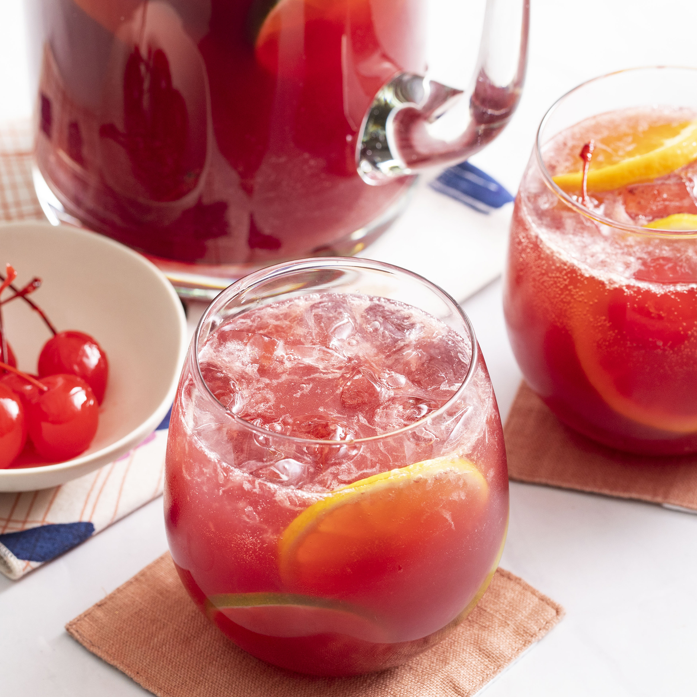

Sangria! Sangria!

Description
Sangria is an alcoholic punch that originated in Spain and Portugal. There are two common varieties: red sangria and white sangria. It's typically made with wine, liqueur, sparkling water, fruit juice, and lots of sliced fruit.
- 1 (750 milliliter) bottle dry red wine
- ½ cup brandy
- ½ cup triple sec
- ⅓ cup frozen lemonade concentrate
- ⅓ cup orange juice
- ¼ cup lemon juice
- ¼ cup white sugar (Optional)
- 1 medium orange, sliced into rounds
- 1 medium lemon, sliced into rounds
- 1 medium lime, sliced into rounds
- 8 maraschino cherries
- 2 cups carbonated water (Optional)
- Mix together red wine, brandy, triple sec, lemonade concentrate, orange juice, lemon juice, and sugar in a bowl. Add orange, lemon, and lime slices and maraschino cherries.
- Serve immediately over ice, or refrigerate 8 hours to overnight for best flavor.
- For a fizzy sangria, add club soda just before serving.